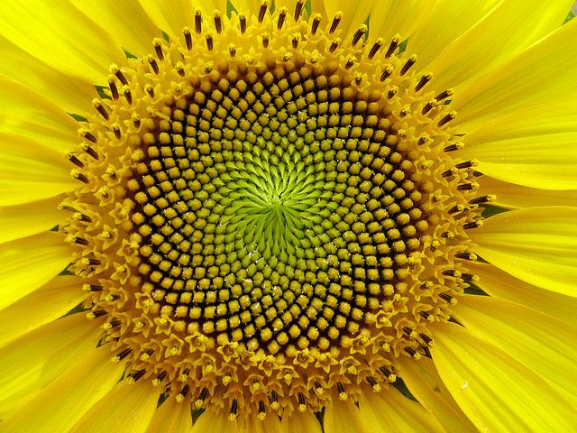

Animate
SIZE SIZE SIZE SIZE SIZE SIZE SIZE S
Go home
The golden ration has lots of usecases. See
Wikipedia
In this use case We spiral around the center with the golden ration as the angle change. This diagram closely resembles the seeds in a sunflowers top.
